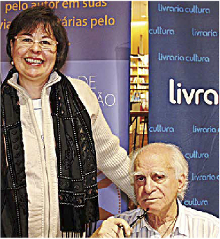

<div class="container-fluid" style="background-color: #fff">
<div class="container">
  <div class="col-sm-12 about-us-text wow fadeInDown animated">
    <h1>A visão em boa forma pelos olhos da Ortóptica</h1><br/>
  </div>
  <div class="col-xs-12">
    <p>
      
    </p>
    <br/>
  </div>
  <div class="col-sm-12 text-justify about-us-text wow fadeInLeft animated">
    <p class="font-size-s">
      Faço em forma de declaração pública. Perdoem-me aqueles que receberem e-mails assinados por Ignaico.
      Não é spam, sou eu mesmo. Perdoem-me quando lerem palavras como trabakhar em lugar de trabalhar,
      gueixa em lugar de guerra, agira em vez de agora, desquycentensrio em lugar de sesquicentenário
      (mas por que eu escreveria sesquicentenário, a não ser em uma referência a Sarney?), bziuca em lugar
      de baiuca? Faço uma pausa. Quando olhei no dicionário, descobri que baiuca significa taberna pequena e imunda.
      <br/>
      <br/>
      Será que o fundador do Baiuca, na Praça Roosevelt, um dos restaurantes mais sofisticados de São Paulo nos anos 60 e 70,
      sabia disso? Quem conhece a história da cidade sabe que ao lado do Baiuca - também chamado de a Baiuca - havia o Sujinho
      (cujo nome real era Comunidade), dos bares mais frequentados da noite, principalmente pelos músicos e cantores da bossa
      nova que atuavam no Baiuca, como César Camargo Mariano, Walter Vanderley, Azeitona, Marisa Gata Mansa, Claudete Soares.
      <br/>
      <br/>
      Bem leitores e amigos se acaso lerem palavras com as letras trocadas me perdoem, não é culpa minha, é dos meus olhos.
      Na digitação troco letras. Tudo começou semanas atrás no funeral de Radha Abramo, viúva de Cláudio Abramo, um dos gênios
      do nosso jornalismo, daquela época em que diretores de redação berravam, gritavam, rasgavam matéria, nos esculhambavam e
      nos transformavam em jornalistas. De repente, vi que meus amigos Zanchetta e Florestan Fernandes tinham se duplicado.
      Fechei os olhos, pisquei, eles continuaram duplos. Como duplas eram Bárbara Abramo e suas filhas Alice e Maria, duplos
      eram os túmulos, o mundo tinha sido multiplicado por dois. Temi. Queria dizer que os 8 bilhões de habitantes da Terra
      eram agora 16? Como alimentar e mitigar a sede dessa gente toda? Na rua, os carros se amontoavam, em balbúrdia infernal.
      Mais do que isso, vinham para cima de mim, tinham desaparecido a mão e a contramão, valia tudo, salve-se quem puder.
      <br/>
      <br/>
      Saí do Cemitério da Consolação para o consultório do Fernando Crosta que me atende há anos, tem acompanhando o declínio de
      minha visão, corroída pelos maus texto que venho lendo por obrigação como editor de revista, ou jurado de concursos literários,
      ou legendas de filmes, ou folhetos entregues na rua, ou de letreiros, faixas, tabuletas e placas, ou na leitura das letras do
      Michel Teló, Luan Quem diria, eu nas mãos de uma ortoptista (*) Ignácio de Loyola Brandão A ortoptista Nélide S. Catach e o
      escritor Ignácio de Loyola Brandão Jornal Oftalmológico Jota Zero | Maio/Junho 2014 Ser ortoptista é uma arte... Ser sensível
      ao sofrimento do paciente e tentar amenizá-lo da melhor maneira possível, devolvendo-lhe a binocularidade e estereopsia!
      Esta é nossa principal tarefa! Santana e outros. Mas tendo lido coisas que me encantam, como a biografia de Tolstoi, por
      Rosamund Bartlett, e a correspondência entre Fernando Pessoa & Ofélia Queiroz (1919-1935), numa belíssima edição da Capivara,
      com revelações inusitadas. Bem, Crosta me apaziguou e me aterrorizou: “Nada a ver comigo, ligue para seu neurologista”.
      Catastrofista, pensei, estou cego.
      <br/>
      <br/>
      Fui para o neuro, consegui um encaixe. Há anos sigo o Getúlio Rabello, ele foi um dos responsáveis por me salvar do aneurisma.
      É um daqueles médicos particulares de família. Isso é fundamental hoje, não podemos nos fiar em convênios médicos, se tivermos
      urgência. Não calculam a lista de exames que me foi pedida. Dá um poema concretista. As hipóteses se sucederam, desde o problema
      com a minha dosagem de vitamina B1 já no final do tanque reserva, até uma ocorrência por glicemia alta. Medicamentos dados e
      trocados, tomados, o corpo humano é um mistério.
      <br/>
      <br/>
      Na rua, amigos sabiam do caso, recomendavam compressas com água boricada, orações para Santa Luzia, ir a pé até Aparecida, usar
      Colírio Moura Brasil (ainda existe?), colocar rodelas geladas de pepino sobre as pálpebras. Um velha senhora recomendou o Óleo
      de Fígado de Bacalhau, outra um chá de verduras amargas, escarola, rúcula, etc. Na rua, ao caminhar, vejo dois postes, chego com
      cuidado, sei que apenas um é real. E se eu me livro do fictício e bato no verdadeiro? Estendo a mão para pessoas e, como nos filmes
      de fantasmas, minha mão atravessa o vácuo. Fechando um olho, o mundo consertava.
      <br/>
      <br/>
      Várias vezes, olho para uma figura imprecisa e fecho os olhos para defini-la. Mas ao fechar o olho, dou com a pessoa sorrindo para
      mim e piscando de volta. Vai que alguma mulher tenha namorado ou marido ciumento? Como explicar que eu estava tentando enxergar
      direito? Assim venho vivendo essas semanas. Olho os objetos, um existe, outro não. Coisa de Jorge Luis Borges. É e o não é. O ser
      e o não ser. Pensei que poderia ler O Ser e o Nada, de Sartre, tarefa acessível apenas a gente como Giannotti, Paulo Arantes, Zé Celso,
      Fausto Castilho. Estou vivendo entre o ser e o nada. Será que o compêndio (porque esse livro é um compêndio na acepção total da palavra)
      foi escrito porque Sartre era vesgo? Se fosse criança, eu estaria sofrendo bullying, chamado de caolho, vesgo, galo cego e outros epítetos.
      <br/>
      <br/>
      De mão em mão fui entregue às mãos (já que vejo duplo, uso em duplicata também as palavras) de uma ortoptista. A vida é uma constante descoberta. Conheci centenas de ofícios, mas essa palavra me chegou rodeada por enigmas: ortoptista. Nélide Catach, uma senhora afável, paciente com um homem de
      minha idade, indisciplinado e cheio de truques, me examinava e pedia exercícios com os olhos, mas sem mover a cabeça. Eu não virava a cabeça, mas fechava um dos olhos. E ela, terna, dizia não, não queira me enganar. Eu devia seguir a bolinha (como dizemos nós leigos) do meu olho direito, mas ela se recusava a chegar onde a doutora queria. Paralisia de um músculo qualquer que se cansou de ver as besteiras, loucuras e a insensatez deste mundo.
      <br/><br/>
      Está tudo nesse pé. Domar minha impaciência, ansiedade, neurastenia e exercitar. Tornar-me zen (esta é antiga). Talvez possa escrever um livro de autoajuda. Perdoem-me os amigos, se eu não reconhecê-los. A essa altura, aceno para todo mundo, cordial. Penso em usar uma venda sobre o olho, como Nicholas Ray, o diretor de filmes como Juventude Transviada. Ou como John Ford. Ou como alguns vilões dos filmes do 007. De qualquer forma, quando comentei com Getúlio que envelhecer tem suas chatices, ele respondeu categórico: “É, mas a outra alternativa é bem pior”
      <br/>
      <h4 style="display: inline-block;">
        <strong>“</strong>Ser ortoptista é uma arte...<br/>
        Ser sensível ao sofrimento do paciente e tentar amenizá-lo da melhor maneira possível,<br/>
        devolvendo-lhe a binocularidade e estereopsia! Esta é nossa principal tarefa!<strong>”</strong>
      </h4>
      <br/>
      <br/>
      Fonte: <a href="http://www.jotazerodigital.com.br/" target="_blank">www.jotazerodigital.com.br</a>
      <br/>
      <br/>
      <sub>(*) Crônica do escritor Ignácio Loyola Brandão publicada no jornal O Estado de S. Paulo de 23 de agosto de 2013, republicada com autorização do autor.</sub>
    </p>
  </div>
</div>
</div>